# 1 整理
在摸索的过程中，用的 Excalidraw，画图记录（懒得重新整理就干脆照搬了）
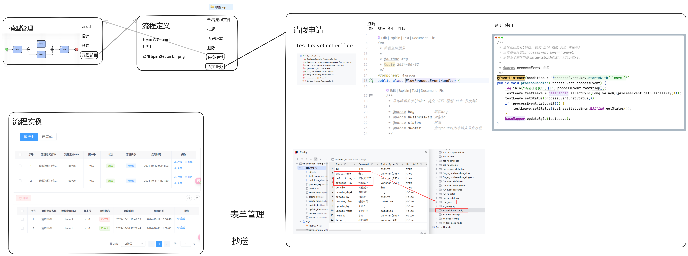
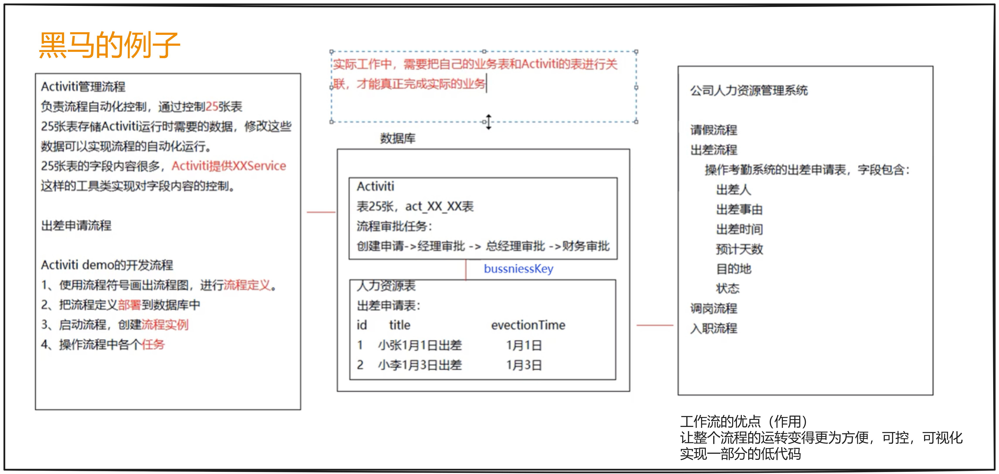
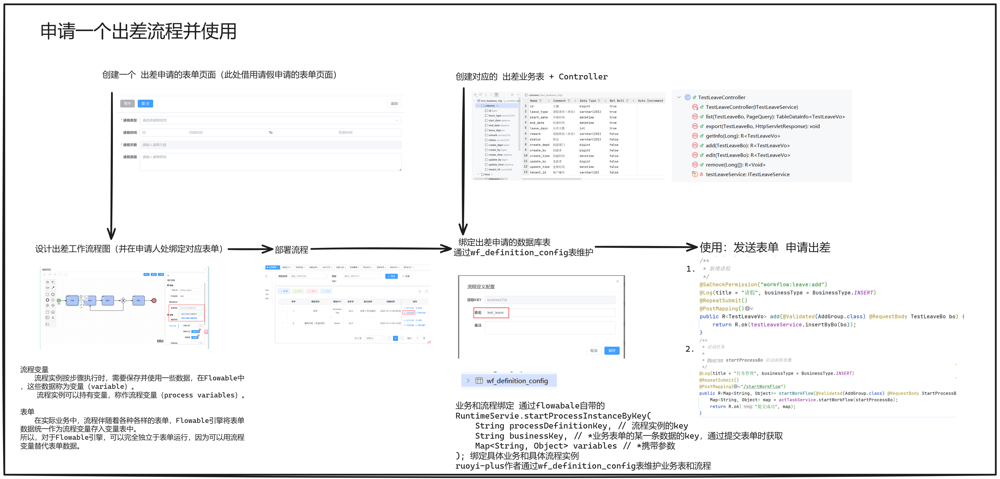
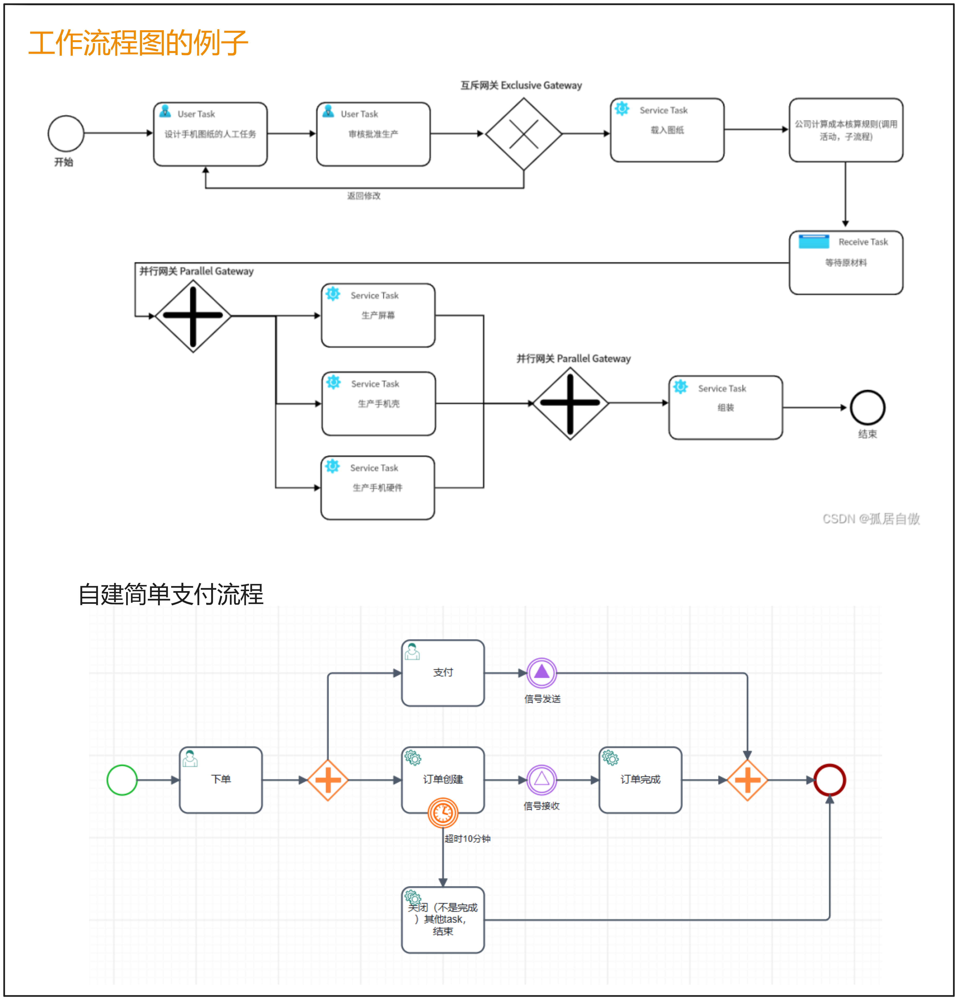
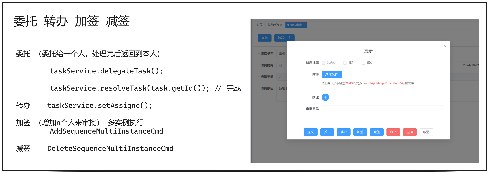
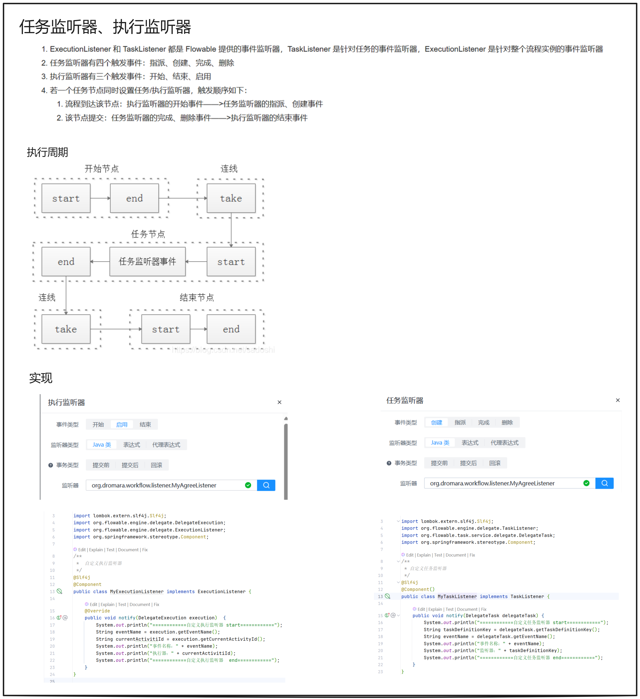
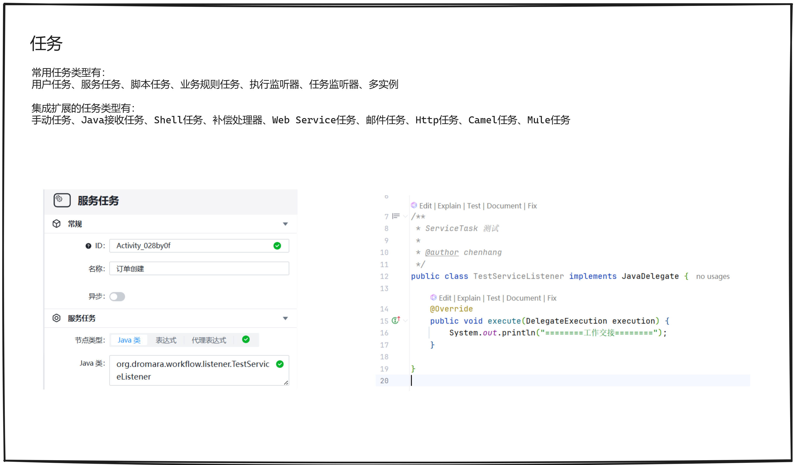
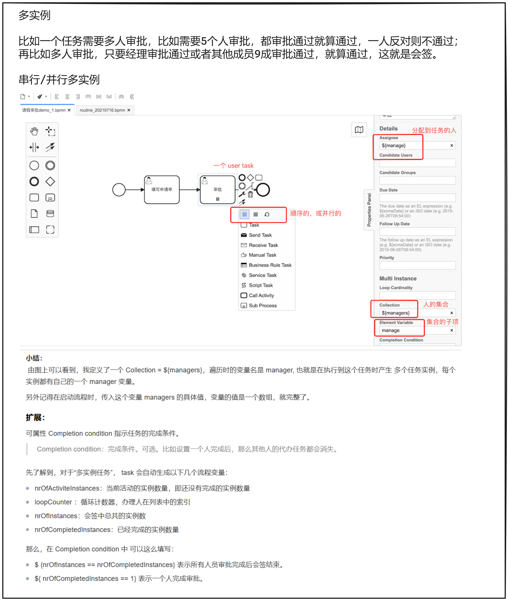
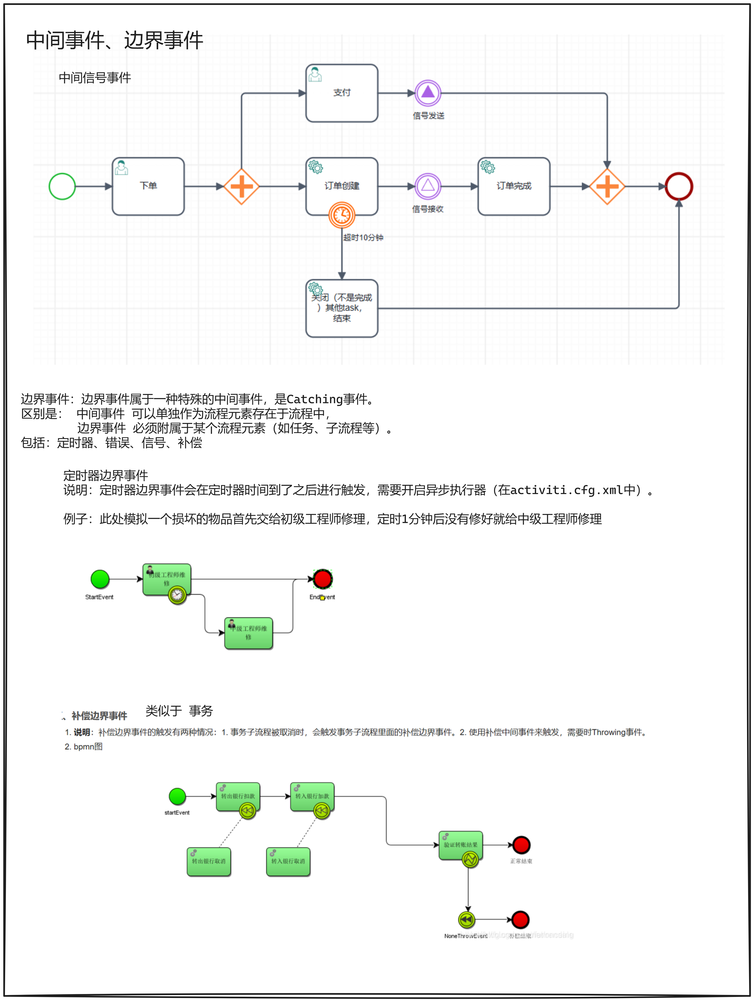
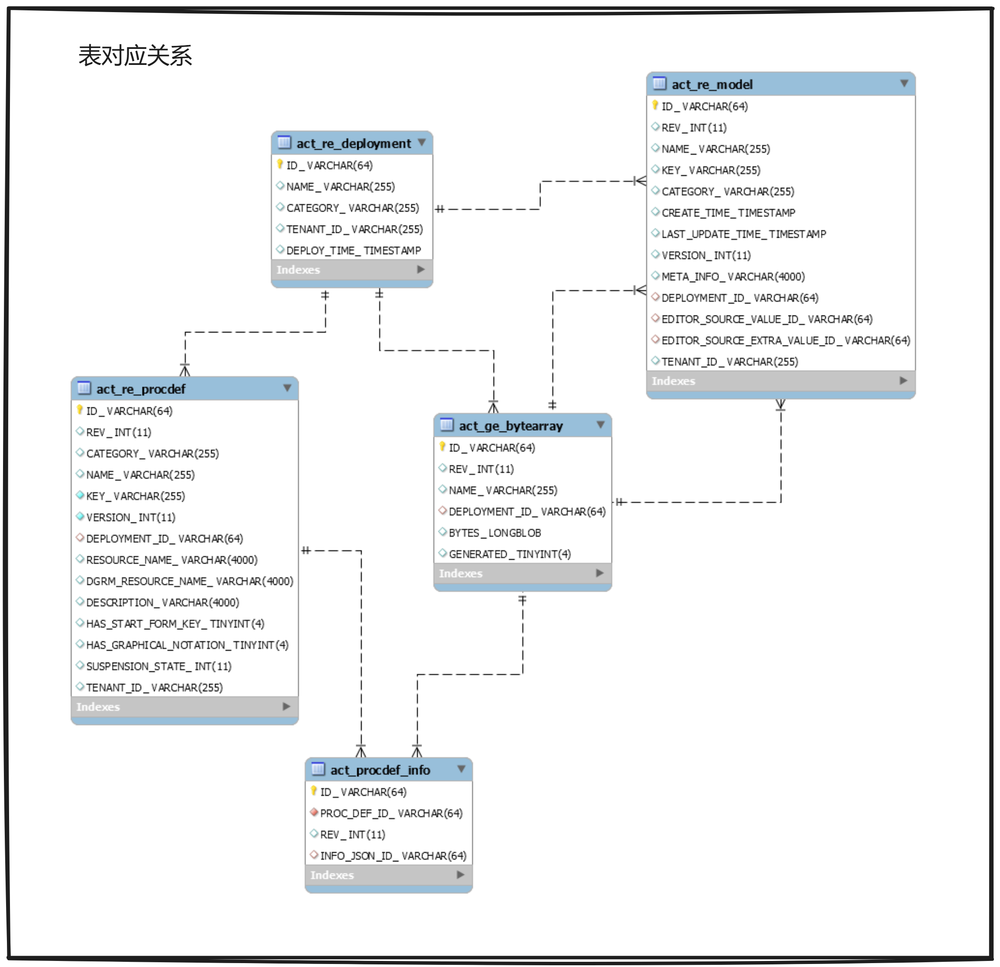
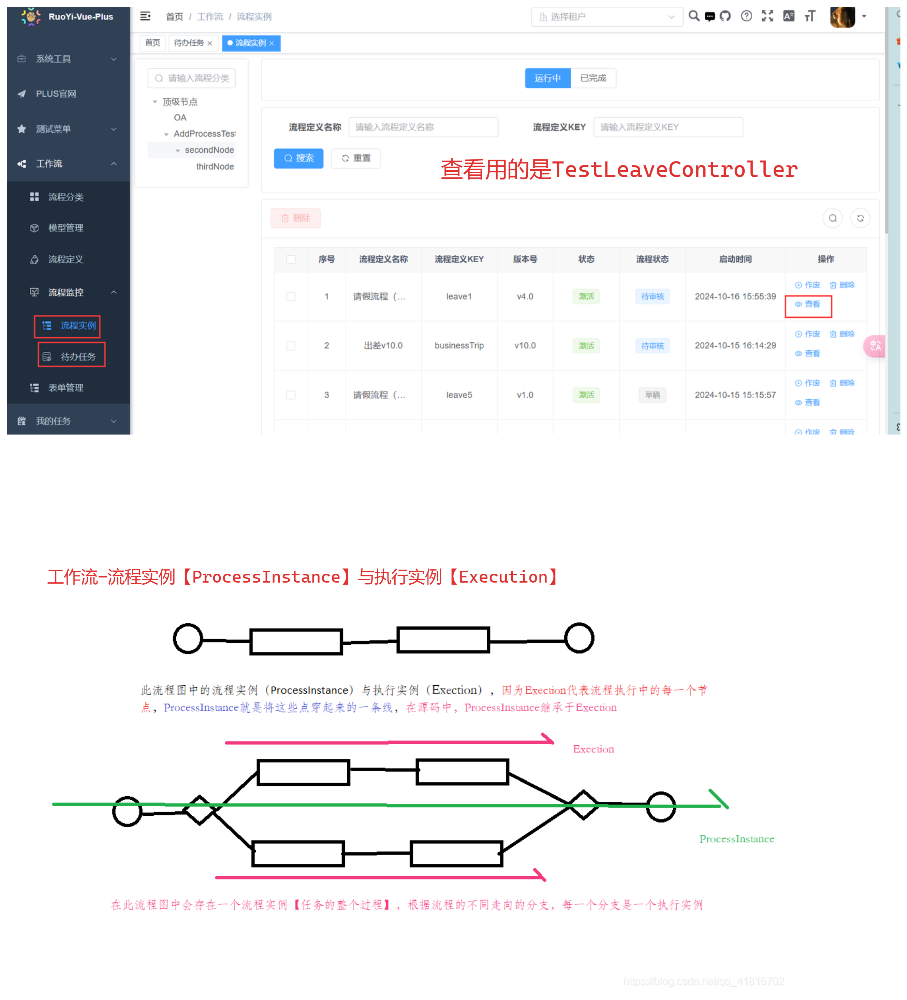
# 2 demo
以及打断点调试代码，工作流部分的代码看的大差不差了，懂了七八十。
# 2.1
后面尝试理解业务写个 demo 出来，但是不太会，涉及到业务表设计（这个涉及到租户什么的，新东西，嗯），照葫芦画瓢整了个前端页面（路由，可恶的路由），以及文件的上传（不懂啊，这个似乎走的是 remote 什么的，而且我上传文件报错了，可能是需要的服务 minio 没运行）

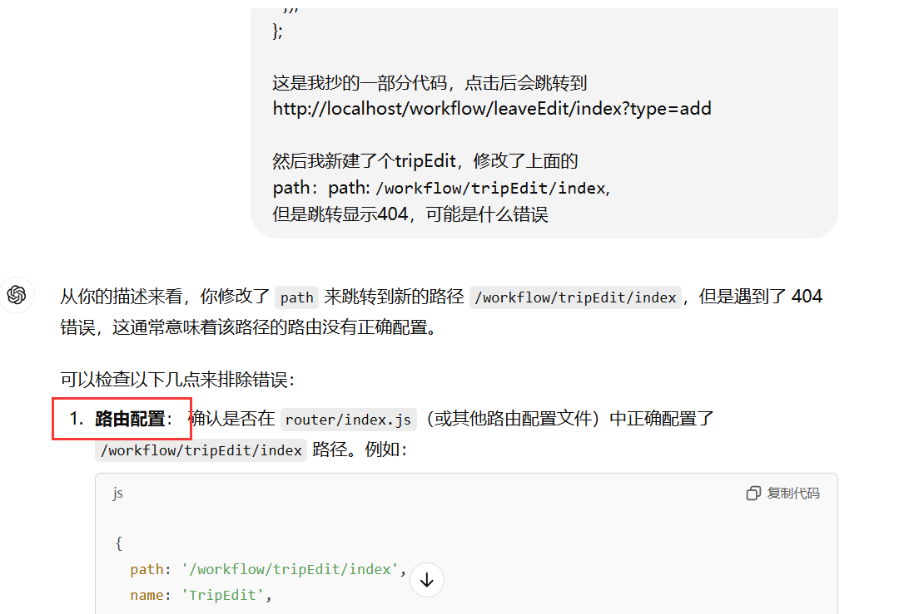
# 3 解耦
# 3.1
需要把 workflow 从项目中解耦，用到自己的项目中去
于是自己摸索，最后找到最方便的就是在 pom 文件中一个一个去替换，把源代码复制到对应路径，并有选择的复制 org.springframework.boot.autoconfigure.AutoConfiguration配置文件
(踩了大坑，花了好久时间排除)
一开始替换某个模块时，我看到有 AutoConfiguration 配置就一起复制了过去，结果报错，我找不出来。
首先排除代码的问题，因为本来就能跑，所以就是依赖环境之类的
（因为我是草台班子所以不是很清楚 AutoConfiguration 配置文件干什么用），尝试删除 AutoConfiguration 后，能跑了，所以后面所有的模块移除我都没有复制对应的 AutoConfiguration 文件，也都能跑。
二编：
dict那个AutoConfiguration报错原来是idea复制的时候路径错了导致报错
后面需要把全部的AutoConfiguration复制，不然即使运行了使用接口是依旧会报错
直到 mybatis-plus 模块和 dubbo 模块
找昏头了
花了一天时间，因为我没系统学过这俩，所以也不知道哪里出了问题，gpt 也不懂，很可惜（亟需贾维斯）。
当所有的不可能都排除之后，剩下的就是正确答案(什么奇怪发言)
于是我把 AutoConfiguration 的复制了过来，跑通了。
跑通了！
于是继续拷打 gpt，为什么有的需要配置有的不需要呢
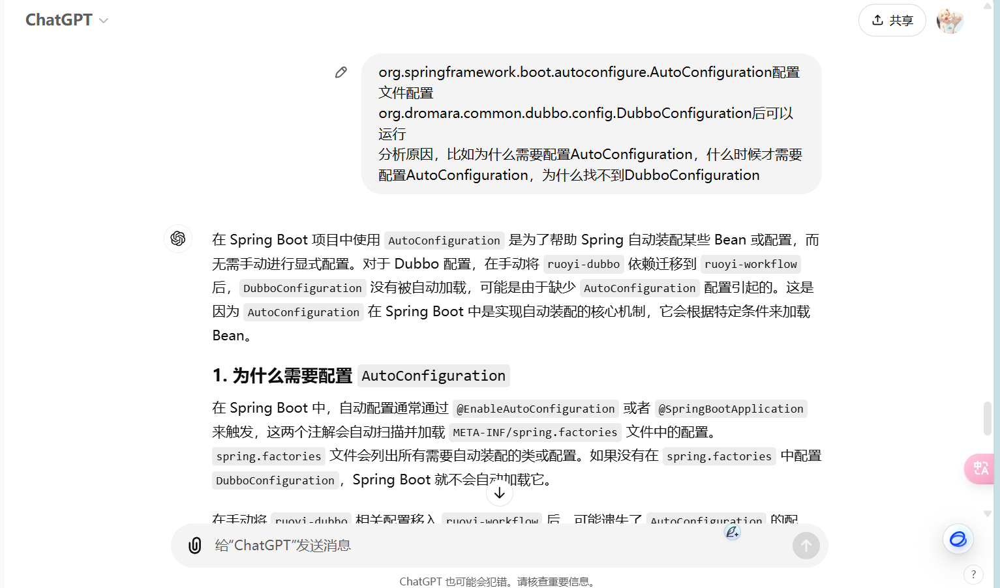
# 3.2 gpt
在 Spring Boot 项目中使用 AutoConfiguration 是为了帮助 Spring 自动装配某些 Bean 或配置，而无需手动进行显式配置。对于 Dubbo 配置，在手动将 ruoyi-dubbo 依赖迁移到 ruoyi-workflow 后， DubboConfiguration 没有被自动加载，可能是由于缺少 AutoConfiguration 配置引起的。这是因为 AutoConfiguration 在 Spring Boot 中是实现自动装配的核心机制，它会根据特定条件来加载 Bean。
# 1. 为什么需要配置 AutoConfiguration
在 Spring Boot 中，自动配置通常通过 @EnableAutoConfiguration 或者 @SpringBootApplication 来触发，这两个注解会自动扫描并加载 META-INF/spring.factories 文件中的配置。 spring.factories 文件会列出所有需要自动装配的类或配置。如果没有在 spring.factories 中配置 DubboConfiguration ，Spring Boot 就不会自动加载它。
在手动将 ruoyi-dubbo 相关配置移入 ruoyi-workflow 后，可能遗失了 AutoConfiguration 的配置，导致 DubboConfiguration 未被 Spring Boot 的自动装配机制加载。因此，需要在 AutoConfiguration 中显式指定 DubboConfiguration ，让 Spring Boot 知道需要自动加载该配置类。
# 2. 什么时候需要配置 AutoConfiguration
通常在以下几种情况下需要配置 AutoConfiguration ：
- 模块独立性：当有多个模块时（如
ruoyi-dubbo和ruoyi-workflow），为了确保每个模块的配置能够被自动识别和加载，需要使用AutoConfiguration。尤其当你拆分或合并模块后，手动配置AutoConfiguration能确保原本分散的配置正常加载。 - 避免繁琐配置：
AutoConfiguration可以帮助避免手动配置 Bean 及其依赖，简化配置流程。例如，在Dubbo集成场景中，AutoConfiguration能够自动加载与Dubbo相关的所有 Bean 和配置信息。 - 按需加载：有时需要根据条件加载不同的配置或 Bean，比如使用
@ConditionalOnMissingBean或@ConditionalOnClass来控制配置的加载情况，以满足不同环境的需求。这在模块化项目中非常常见。
# 3. 为什么找不到 DubboConfiguration
在 ruoyi-dubbo 迁移到 ruoyi-workflow 后，找不到 DubboConfiguration 的原因可能是：
未在
spring.factories中指定：如果spring.factories文件没有将DubboConfiguration类注册到自动配置中，Spring Boot 无法加载它。这可能是因为在迁移时未将spring.factories文件及其配置一同迁移，或者在ruoyi-workflow项目中没有配置该文件。扫描路径或加载条件问题：
DubboConfiguration可能包含特定的加载条件（如@ConditionalOnClass或@ConditionalOnProperty）。如果项目环境不满足这些条件，Spring Boot 就不会加载它。模块间依赖问题：
DubboConfiguration可能依赖ruoyi-dubbo中的其他配置类或资源。在迁移过程中，未将这些依赖一并迁移，导致DubboConfiguration在ruoyi-workflow中加载失败。
# 解决方案
配置
spring.factories文件：在ruoyi-workflow模块中创建或更新META-INF/spring.factories文件，确保其中包含以下内容：org.springframework.boot.autoconfigure.EnableAutoConfiguration=\
org.dromara.common.dubbo.config.DubboConfiguration
检查
DubboConfiguration加载条件：确保环境中满足所有DubboConfiguration的加载条件。如果有必要，可以修改DubboConfiguration类，去除不必要的条件注解来简化加载过程。模块依赖问题：确认所有
DubboConfiguration所需的依赖已在ruoyi-workflow中正确导入。
# 3.2 放到自己的项目
只需要如下（大致，其他操作比如短信文件先不用管）
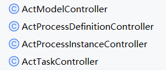
拉下 workflow 的项目，并初始化，以及导入 core 等需要的项目
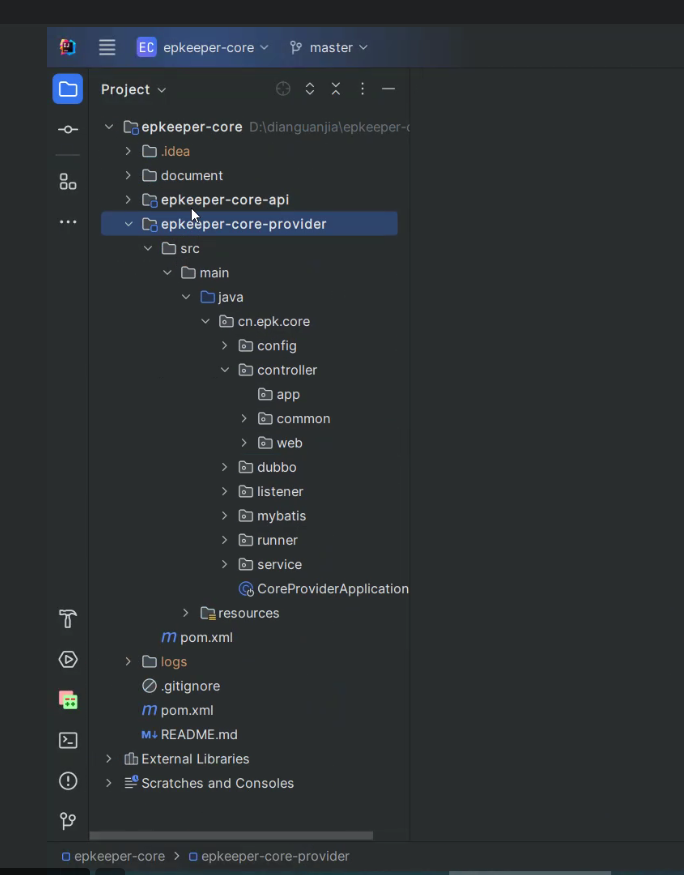
一个个写，并用 postman 测试